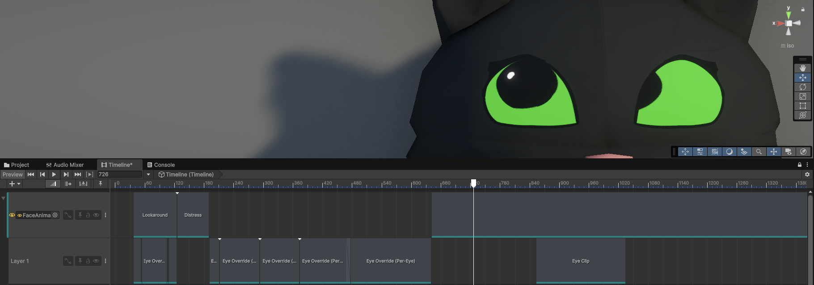

Eye Track
All eye animation for a single character is defined in its own Timeline track. Clips are applied top-most to bottom-most layer (clips on layer 1 override layer 1 etc.). Refer to each clip type to see mixing and blending behaviours.
Available Clips
Procedural animation
Procedural animation clips automate the animation process by allowing the eye behaviours to be [script-driven]. These clips do not modify the EyeAnimator directly. Their values are taken and blender, mixed and overriden with other clips on the track before being applied.
State-Machine Clip
Lets the eye be driven using Eye State Assets assets.
Override Clips
Override clips offer varying degrees of control over the expressions. They can be used standalone or as overrides to procedural animation.
LookAt Object Clip
Allows you to set lookAt position by selecting a GameObject living in the scene. This is sometimes preferable to writing coordinates manually using the Eye-Clip Overrides.
Both Eyes Clip Override
Allows you to override all values for both eyes at once. This includes appearance, blink indexes or LookAts coordinates. For more per-eye control, use Per-Eye Clip Override instead.
Per-Eye Clip Override
Allows you to override all values of the eyes and gives you advanced per-eye options.
Overriding Logic
For greater control you might want Clip B to not override or blend with some Properties of Clip A. This is achieved by using a special value constant which is ignored by FaceToons:
| FieldType | Ignores Value |
|---|---|
| Reference (For instance any field in EyeSet) | Empty values (Null) are ignored. |
| LookAt direction | (0,0,0) is ignored and will not be considered in weight calculations |
| Eye Closed Amount | -1 values are ignored and will not be considered in weight calculations |